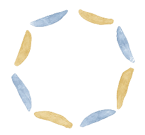
01子どもの主体性を大切に
子ども自身が「やりたい」と思う気持ちを尊重。自分で考え、試し、学ぶ力を育みます。
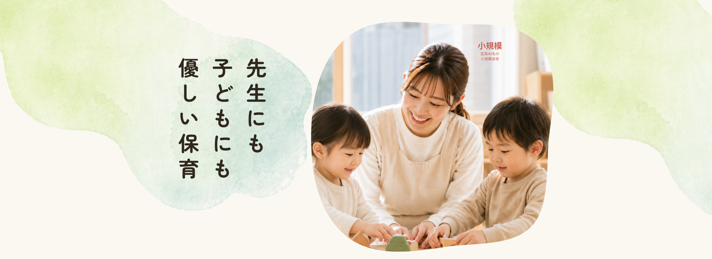
FEATURE

01子ども自身が「やりたい」と思う気持ちを尊重。自分で考え、試し、学ぶ力を育みます。
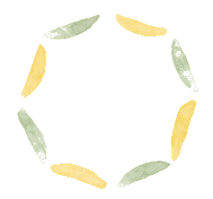
02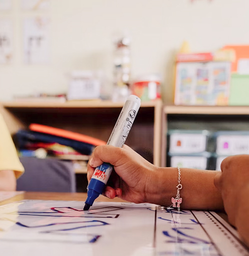
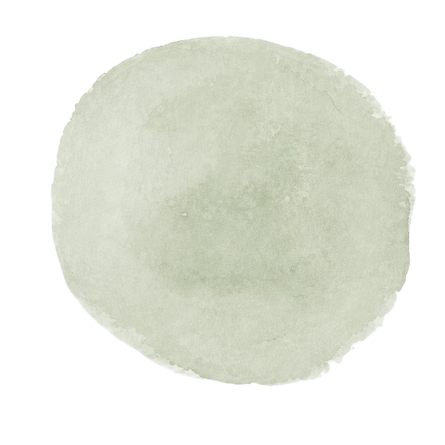
残業は月平均3時間程度。持ち帰りもほとんどなく、勤務後は自分や家族のための時間も大切にできます。
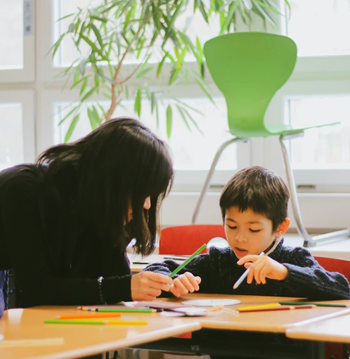
少人数のスタッフだから距離が近く、困ったことはすぐ相談できる環境です。ブランク明けの方も、ペースに合わせて無理なく慣れていけます。
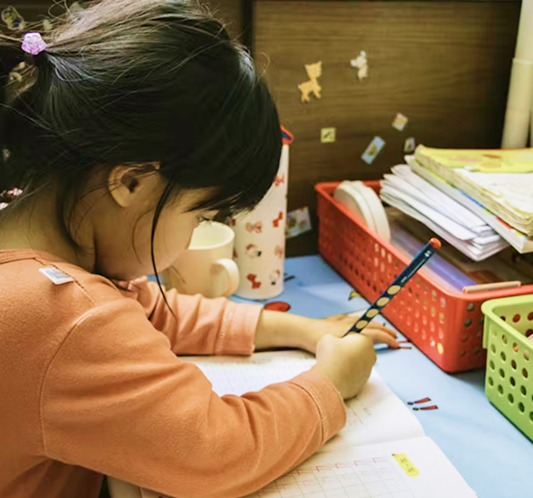
急な体調不良にもみんなでカバー。有給取得率90％・産育休復帰率100％で、見学や相談から気軽にスタートできます。
DAILY SCHEDULE
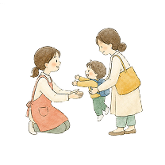
子どもたちを笑顔でお迎え。保護者と一言コミュニケーション
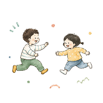
歌や絵本、自由遊び。子どもの「やりたい！」を引き出す時間
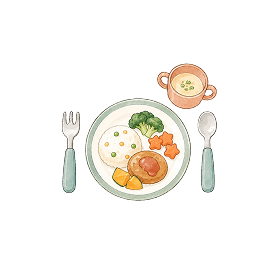
手作り給食でほっとひと息。子どもたちと一緒に「おいしい！」
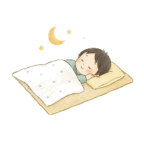
子どもがお昼寝の間に書類作成や休憩。メリハリのある仕事
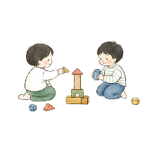
おやつの後は好きな遊びを楽しむ。じっくり向き合える時間
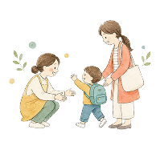
今日の出来事を保護者にお伝え。お迎えを一緒に喜び合う
STAFF VOICE
新卒入職 3年目
子どもたちの「できた！」を毎日感じられる仕事です。小人数だから、一人ひとりの成長をていねいに見守れます。
中途入職 5年目
前職よりも残業が少なく、家庭との両立がしやすくなりました。困った時に相談しやすい雰囲気も安心です。
ブランク復帰 1年目
ブランクがあって不安でしたが、ゆっくり慣れていけるよう配慮してもらえました。子どもと丁寧に向き合えます。
RECRUITMENT
| 募集職種 | 保育士 |
|---|---|
| 雇用形態 | 正社員・パート |
| 勤務時間 | 7:30〜18:30の間でシフト制 |
| 勤務場所 | 陽だまりの森保育園 |
| 給与 | 経験・スキルに応じて決定 |
| 福利厚生 | 社会保険完備、交通費支給、産休・育休制度 |
| その他 | 見学のみ、カジュアル面談からのご相談も歓迎します。 |
FAQ
Aはい。先輩が業務の流れを丁寧にサポートします。見学や相談からでも歓迎です。
A可能です。園の雰囲気や働き方を知ってから検討いただけます。
A残業は少なめで、持ち帰りが発生しにくい体制づくりを大切にしています。
A大丈夫です。復帰後のペースに合わせて少しずつ慣れていけます。
A得意なことを活かしながらチームで保育を進めるため、ピアノが苦手でも問題ありません。
A希望や状況に応じて相談できます。まずは働き方の希望を聞かせてください。
VISIT US
見学のみ、カジュアル面談のみでも大丈夫です。
あなたらしく働ける場所か、ぜひ一度たしかめてください。